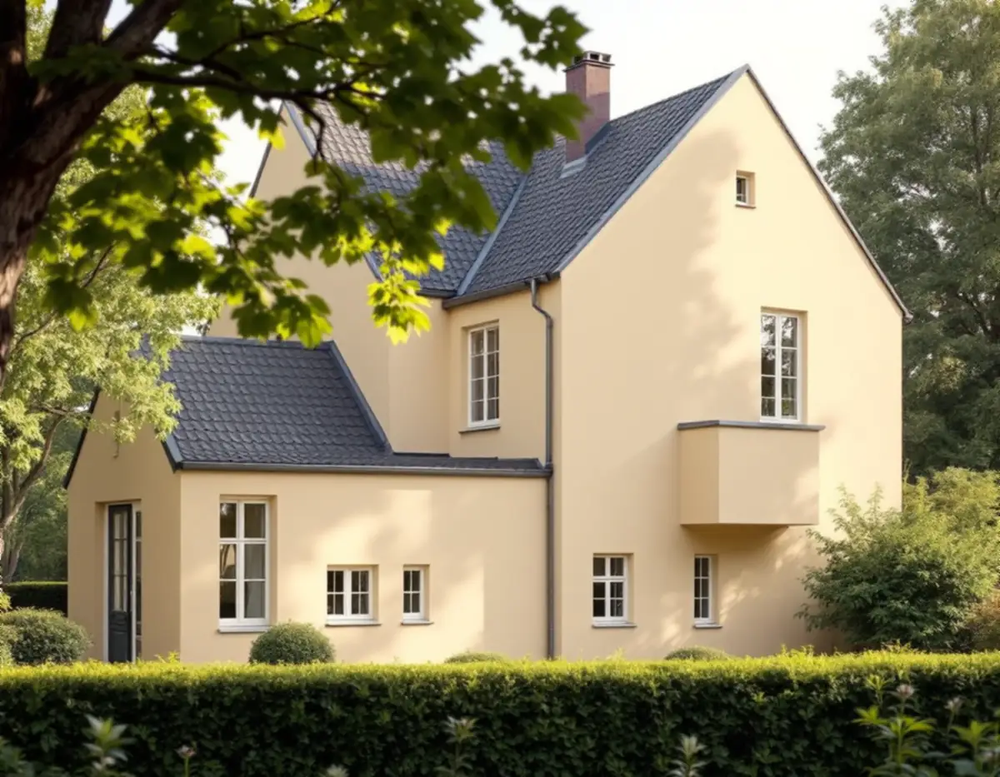
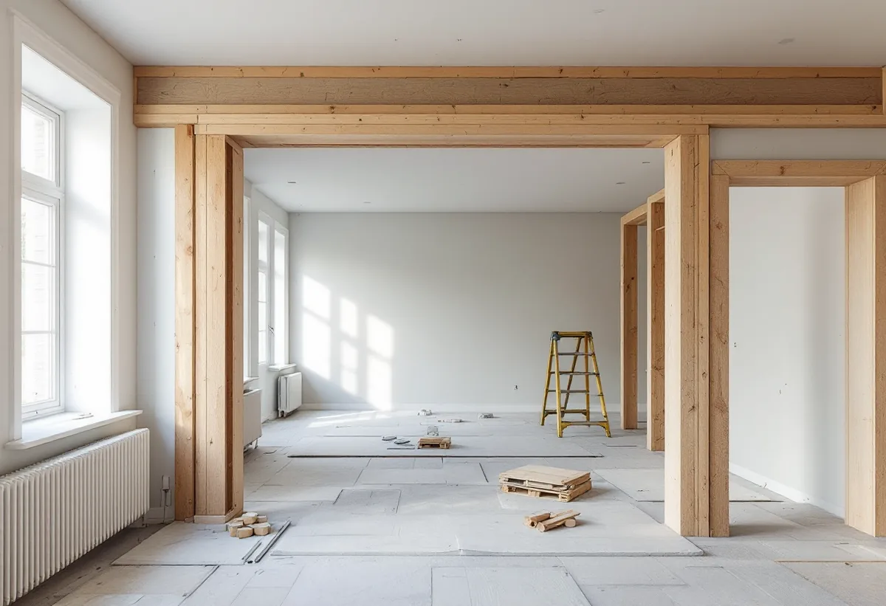
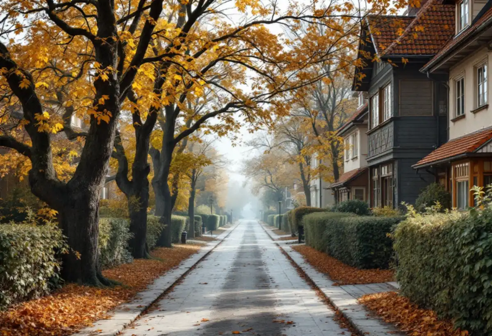

Solnakartan
Vi kontrollerar om huset eller miljön är utpekad och vilka planbestämmelser som gäller.

Solna stad skriver rakt ut att undantagen från bygglov ofta inte kan användas i Solna, eftersom stora delar av staden är kulturhistoriskt värdefulla.
Beskriv jobbet kort.
Något blev fel. Kontrollera uppgifterna eller ring 08 12 410 276.
Vi tittar på jobbet på plats innan du får offert.
Du ser vad som ingår och vad det kostar.
Vi drar av ROT direkt och sköter ansökan.
Geal Entreprenad AB, Bromma. Org.nr 559303-7566.

För en tillbyggnad betyder det att kartan och planen måste läsas först. Geal Entreprenad AB tar fram underlaget och bygger till huset med total entreprenad.
På stadens sida om bygglovsfria åtgärder står att en lovfri tillbyggnad på ett en- eller tvåbostadshus får vara högst 30 kvadratmeter brutto- eller öppenarea, och att tidigare skärmtak och attefallstillbyggnader räknas in. Men staden skriver också att dessa åtgärder oftast inte kan utföras i Solna, eftersom de inte får göras på en byggnad eller i ett bebyggelseområde som är särskilt kulturhistoriskt värdefullt.
Staden räknar upp riksintressena för kulturmiljövården – Karlberg, Solna kyrkby- och radhusbebyggelse, Ulriksdal och Hagaparken – och de sammanhängande värdefulla miljöerna i översiktsplanen, bland andra Råsunda villastad, villabebyggelsen i norra Råsunda, Råsta egnahem och Alnäs och Stocksundstorp.

Utöver de utpekade miljöerna nämner staden en- och tvåbostadshus som är klassade som kulturhistoriskt värdefulla i översiktsplanen eller i Solnas kulturminnesvårdsprogram, och hus inom detaljplaner med varsamhets- eller skyddsbestämmelser, så kallade k och q. Det gäller bland annat områdena kring Sjövägen, Bergshamra by och Stocksundstorp.
Står ditt hus i en sådan miljö räknar vi med en bygglovsansökan från början. Då blir gestaltningen viktig: tillbyggnaden ska anpassas till husets ursprungliga karaktär och inte förvanska det. Staden hänvisar till Solnakartan för att se vilka byggnader och miljöer som är utpekade.
En tillbyggnad blir oftast meningsfull först när den öppnas mot resten av huset. Solna stad skriver att invändiga ändringar som påverkar bärande delar kräver anmälan och startbesked, till exempel avväxling av en bärande vägg eller håltagning i ett bärande bjälklag. Till anmälan hör ett utlåtande från konstruktör, konstruktionsritning, planritning och sektionsritning.
Ibland krävs dessutom en kontrollansvarig. Vi tar fram konstruktionsunderlaget tillsammans med en konstruktör och ser till att anmälan är komplett innan väggen rörs. Staden skriver också att de flesta områden i Solna har en detaljplan, och att fastigheter utanför plan ofta har stora kulturvärden och skyddas på annat sätt – till exempel slottsområdena Haga och Ulriksdal, som är statliga byggnadsminnen.
Staden påminner om att fastighetsägarens tillstånd behövs även när åtgärden inte kräver lov eller anmälan – något att tänka på för den som äger ett radhus i en förening eller hyr. Ligger fastigheten inom strandskyddat område kan det krävas dispens, och i vissa lägen tillstånd från andra myndigheter.
Är tillbyggnaden lovfri kan du söka frivilligt bygglov för att få stadens bedömning av att den är lagenlig. Då betalar du bygglovsavgift som vanligt. Den som bygger utan startbesked när ett sådant krävs riskerar en byggsanktionsavgift. Mer om utbyggnader finns under tillbyggnad, och om husets helhet under byggföretag i Solna.
Vi kontrollerar om huset eller miljön är utpekad och vilka planbestämmelser som gäller.
Gratis besök där huset och tidigare tillbyggnader mäts.
Förslag anpassat till husets karaktär, med konstruktionsunderlag.
Bygglovsansökan och anmälan för bärande delar.
Grund, stomme, tak och öppning mot befintligt hus.
Den nya delen tas i bruk efter slutbesked.
Rotavdraget gäller arbetskostnaden, inte material. Skatteverket räknar en tillbyggnad av ett bostadshus som rotarbete om någon av dess sidor sitter ihop med husets yttervägg till minst 75 procent eller om en dörr förbinder de två delarna.
Bostaden ska vara äldre än fem år och större delen av den ursprungliga stommen ska behållas. Där avdraget gäller drar Geal det direkt på fakturan.
Om bygglov och anpassade ritningar behövs, storlek och grundläggning, hur bärande väggar öppnas, material som ska matcha huset och installationer. Efter ett gratis platsbesök får du ett skriftligt kostnadsförslag.
Mer boyta i samma hus.
Tillbyggnad →Takbyte, takbesiktning och plåtarbeten.
Takläggare i Solna →Råsunda, Stocksundstorp och Råsta.
Takrenovering i Solna →Kulturmiljöerna, kartan och lovet.
Attefallshus i Solna →Ritningar, kontrollplan och slutbesked.
Byggföretag i Solna →Radhusen, föreningen och lovet.
Fasadmålning i Solna →Putsade villor och krav på material.
Fasadrenovering i Solna →Råsunda, bygglovet och handlingarna.
Fönsterbyte i Solna →Fönster från 1950-talet, kitt och fogar.
Fönsterrenovering i Solna →Ta fram och slipa trägolvet under mattan.
Golvslipning i Solna →Plåt i Solnas kulturmiljöer.
Plåtslagare i Solna →Gatusidan, gårdssidan och konstruktionen.
Takbyte i Solna →Tapet efter husets ålder och underlag.
Tapetsering i Solna →Bostadsrätt, stambyte och villor.
Badrumsrenovering i Solna →Bostadsrätter i Råsunda, Hagalund och Huvudsta.
Golvläggare i Solna →Bostadsrätter, fläktar och Råsundas villor.
Köksrenovering i Solna →Villor, radhus och lägenheter i Solna.
Målare i Solna →Väggar, dörrar, balkong och radhus.
Snickare i Solna →Hela lägenheten, elen inräknad.
Totalrenovering i Solna →Eller ring 08 12 410 276, mån–fre 08–17.
Beskriv jobbet kort.
Något blev fel. Kontrollera uppgifterna eller ring 08 12 410 276.